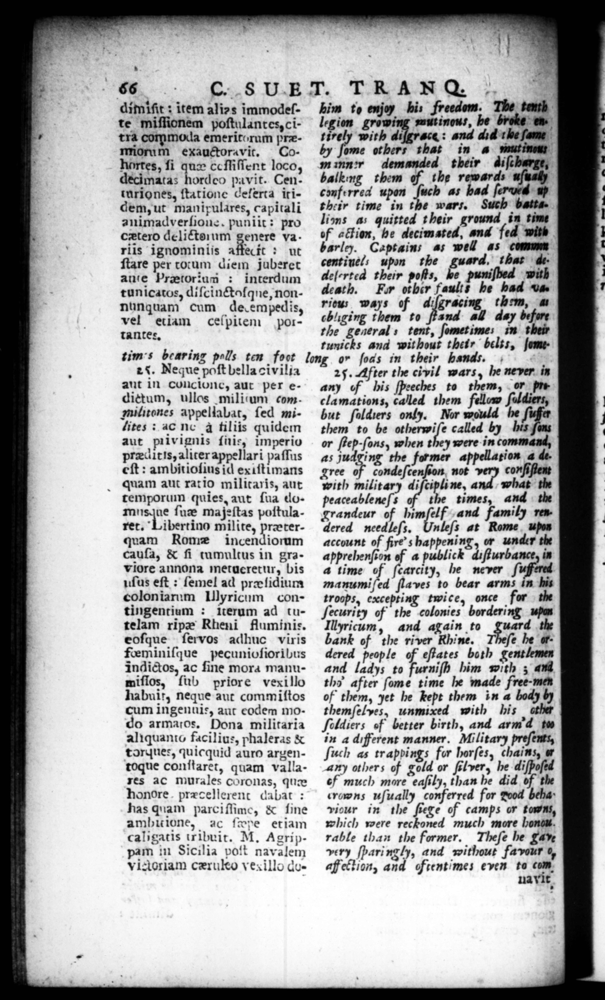

nn —— 89 . —_— = | 4 | x * = \ | N , 7 1 < . bt : ' ; dimiſit: item alizs immodeſte mĩſſionem poſtulantes, citra com moda emeritorum præmiorum exauctora vit. Cohorres, ſi quæ ceſſiſſent loco, decimatas hordeo pavit. Centuriones, ſtatione Ceſerta itidem, ut manixulares, capitali animadverhone. puniit: pro cztero delictorum genere va riis ignominiis afffecit : ut ſtare per totum diem juberet an'e Pretorium : interdum tunicatos, diſcinctaſque, nonnunquam cum de.empedis, vel etiam celpitem ,portantes. enn TANG & him to enjoy hi: freedom. The tenth legion —_ mitt inous, he broke en» tirely with di{grace : and did the ſame by ſome others that in a mung minn' demanded their diſcharge, balkmmg them of the rewards uſually conferred upon ſuch as had ſerved" up their time in the wars. Such battalions as quitted their ground in time of «ion, be decimated, and fed with barley. Captains as well as comm _— = — ard. r — deſcrted their poſts, be ö wit death. Fur hp Faults be had va. riow ways of diſgracing them, a cb'iging them to ſtand all day before the general tent, ſometime: in their tunicks and without their belts, fometim's bearing polls ten foot long or ſods in their hands. | N. Neque poſt bella civilia ant in concionc, aut per edictum, ullos miliſum commilitones appellabat, ſed milites: ac nc a tiliis quidem aut pivignts ſnie, imperio præditis, aliter appellarĩ paſſus eſt: ambitioſius id exiſtimans quam aut rat io militaris, aut temporum quies, aut ſua domus que ſuæ ma jeſtas poſtularet. Libertino milite, præterquam Rome incendiorum cauſa, & ſi tumultus in graviore annona merueretur, bis uſus eſt: ſemel ad præſidium colon iarum Illyricum contingentium : iterum ad tutelam ripæ Rhieni fluminis. eoſque ſervos adhuc viris feminiſque pecunioſioribus indictos, ac fine mora manumiſlos, ſub priore vexillo habuit, neque aut commiſtos cum ingenuis, aut eodem modo armatos. Dona militaria aliquanto facilius, phaleras & torques, quicquid auro argentoque conſtaret, quam vallares ac murales coronas, qum honore præcellerent dabat: has quam parciſſime, & fine ambitione, ac fwpe etiam caligatis tribuit. M. Agrippam in Sicilia poſt navalem vidoriam czruko ves illo do25. After the civil wars, he never. in any of his ſpeeches to them, or ts clamations, called them fellow ſuldiers, but ſoldiers only. Nor would he he them to be _— called by his ſons or ſtep-ſons, when they were in command, as judging the former appellation 4 de gree + condeſcenſion not as conſiſtent with military diſcipline, and hat the peaceableneſs the times, and the grandeur of * and family rew dered needleſs, Unleſs at Rome upon account of fire” s happening, or under the apprehenſion of a publick diſturbance, in a time of ſcarcity, he never ſuffered manumiſed ſlaves to bear arms in his troops, excepting twice, once for | the ſecurity of the colonies bordering wpan Illyricum, and again to nos the bank of the river Rhine. Theſe he . dered people of eftates both gentlemen and ladys to furniſh him with ; and thy after ſome time he made free-men of them, yet he kept them in a body by themſelyes, unmixed with his ether ſeldiers of better birth, and arm d tw in a different manner. Military preſents, ſuch as trapbings for horſes, chains, 1 Any others of gold or ſil ver, he diſpoſed ef much more eaſily, than he did of the crowns uſually conferred for N beha» Tour in the ſiege of camps or towns, which were reckoned much more hond rable than the former. Theſe he gave very ſparingly, and without favour 0, affection, and oftentimes even to com. Ua vit HY 6s tft 43 << ew 4 A £#A = a 4
